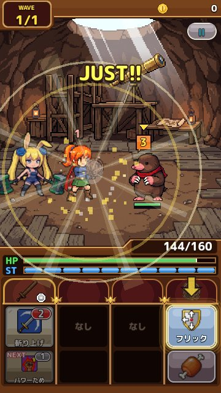

地底編とフリックガード
地上の旅のあとに待つ地底の世界と、向きに合わせて防ぐ「フリックガード」を解説します。 更新：2026-11-13
地底の世界へ
地上の旅を終えると、地図に大きな穴が開き、地底の世界へ降りられるようになります。地底には、キノコの森や地底湖、水晶の洞窟、溶岩の流れる場所など、地上とはまったくちがう景色が広がっています。地底には地底の町とショップ、地底の武器と盾があり、レア度もさらに上の装備が登場します。
フリックガード
地底の敵の攻撃には「向き」があります。攻撃の印に ↑↑・←←・↓↓ のような矢印が出たら、ガードボタンをその向きにはじく（フリックする）ことで防ぎます。向きをまちがえるとガードになりません。
地底では、地底用の「フリックガード」のスキルを持つ盾が必要です。地上の盾のままでは地底の攻撃を防げず、盾の HP や効果も働きません。地底に着いたら、最初の観測所で練習と盾の受け取りができるので、まずはそこで操作に慣れましょう。

連続の向き
地底の強い敵は、向きのちがう攻撃を続けて出してきます。印の下の点で何発来るかがわかり、1 発ずつ向きに合わせてはじきます。盾によっては、次の攻撃の向きが少し前からうっすら見えるようになる「予見」の効果を持つものもあります。
地底での装備の考え方
地底の敵は、モグラ、虫、骨の魔物など、地上とはちがう種族が多く出てきます。地底で手に入る武器には、それらの種族に強い特効スキルを持つものがあるので、地底の宝箱やガチャで集めていきましょう。地底のエリアも、地上と同じように STAGE を進めながら奥へと進んでいきます。
地底を進むときのポイント
- 地上の盾のままでは地底でガードできません。出発前に地底の盾に付けかえましょう
- 地底の敵は向きの組み合わせで攻撃してきます。印の矢印を最後まで見てからはじきましょう
- はじく指は大きく動かす必要はありません。ガードボタンの上で、すっと短くはじくのがコツです
- 地底の町のショップでは、地底の武器と盾が手に入ります
地上と地底の行き来
地底が開いたあとも、地上へはいつでももどれます。地上の装備を整え直したいとき、地上のボスの素材がほしいときなどは、気軽に行き来してください。地上と地底では使える盾がちがうので、装備セットを「地上用」「地底用」に分けておくと、行き来がずっと楽になります。